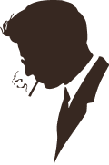

⬅ Sair

Espírito de Jacinto de Sousa
Interferência: Sorte ou Revés
✕
O espírito de Jacinto de Sousa apareceu, agora revele sua interferência!!!
Revelar Interferência
TIPO
Título
Descrição
Como aplicar no jogo